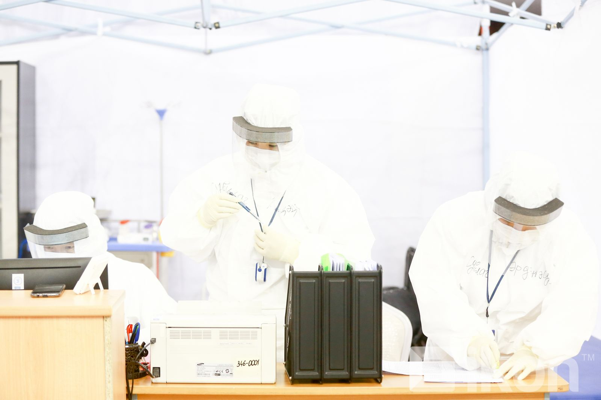
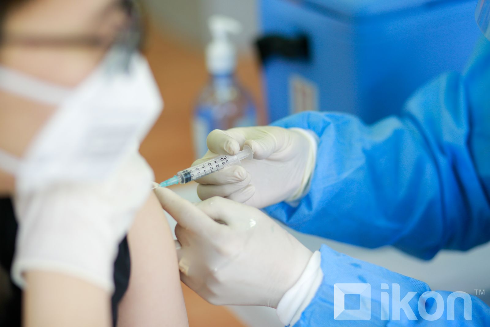

Ковид-19 холбоотой мэдээлэл
|
"КОВИД-19-өөр өвчлөөд эдгэрсэн нийгмийн даатгалын шимтгэл төлөгч иргэн хөдөлмөрийн чадвар түр алдсаны тэтгэмж авах боломжтой" КОВИД-19 халдвараар өвчлөөд эдгэрсэн нийгмийн даатгалын шимтгэл төлөгч иргэн хөдөлмөрийн чадвар алдсаны тэтгэмж авах боломжтойг ХНХ-ын сайд А.Ариунзаяа хэллээ. Тодруулбал, коронавируст халдвараар өвчлөөд эдгэрсэн даатгуулагч өрхийн эрүүл мэндийн төвөөсөө лист, эрүүл мэндийн хуудас аваад хөдөлмөрийн чадвар түр алдсаны тэтгэмжээ авах боломжтой юм байна. |
Шинээр 2,515 хүн COVID-19 халдвараар өвчилж, 16 хүн нас баржээ

Улсын хэмжээнд сүүлийн 24 цагийн хугацаанд коронавируст халдварыг илрүүлэх зорилгоор цуглуулсан сорьцуудад шинжилгээ хийхэд 2,515 хүнээс коронавирусийн халдвар илэрчээ.
Ингэснээр нийт бүртгэгдсэн тохиолдол 301,434 болж нэмэгдлээ.
Шинээр илэрсэн тохиолдлууд бүгд дотоодын халдвар бөгөөд 1,067 нь нийслэл хотод, 1,448 нь орон нутагт илэрчээ.
Ж.Отгонболд: COVID-19-өөр хөнгөн өвчлөөд эдгэрсэн бол 21 хоногийн дараа вакцины III тунг хийлгэж болно

Манай улсад коронавирусийн эсрэг дархлаажуулалт үргэлжилсээр буй бөгөөд бүрэн тундаа хамрагдаад гурван сараас дээш хугацаа өнгөрсөн бол гурав дахь тунг хийлгэх боломжтой болж байгаа.
Тэрбээр "КОВИД-19-өөр хөнгөн өвчлөөд эдгэрсэн бол 21 хоногийн дараа вакцины гурав дахь тунг хийлгэж болно. Харин хүнд өвдсөн бол эмчийн заалтыг харгалзан нэг сарын дараа хийлгэх боломжтой. Дархлаажуулалт сайн дурын үндсэн дээр явагдаж буй учир иргэд гурав дахь тунд хамрагдах эсэх болон ямар вакцин хийлгэхээ өөрсдөө сонгоно" гэлээ.
Өчигдрийн байдлаар манай улсад 288,000 хүн коронавирусийн эсрэг вакцины гурав дахь тунг хийлгэсэн байна.
|
Өнөөдөр дархлаажуулалтын 24 цэг 09:00-17:00 цагт ажиллана Вакцинжуулалт эхэлснээс хойш нийслэлийн нийт хүн амын I тунгийн хамралт 74.5 хувь, II тунгийн хамралт 70.6 хувь, нэмэлт тунгийн хамрагдалт 16 хувь байна. Зорилтот бүлгийн буюу 2,909 жирэмсэн эх, 12-15 насны 66,686, 16-17 насны 26,224 хүүхэд тус тус дархлаажуулалтын бүрэн тунд хамрагдсан хэмээн Нийслэлийн Онцгой комиссоос мэдээлэв |
Эхлэл
Ковид-19
Улс төр
Эдийн засаг
Нийгэм
Эрүүл мэнд
Дэлхий дахин
Хэрэглэгч